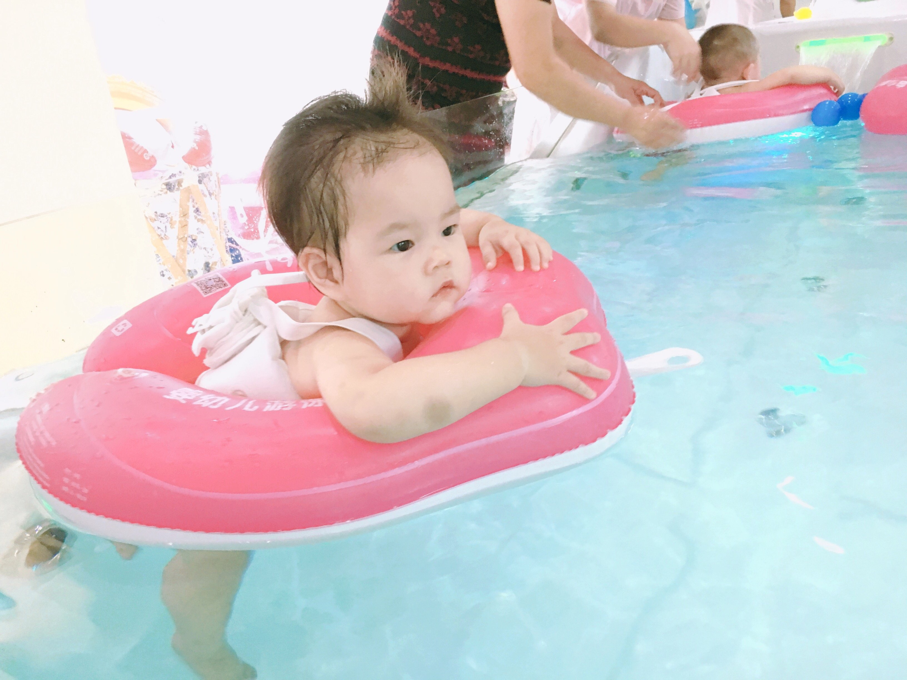
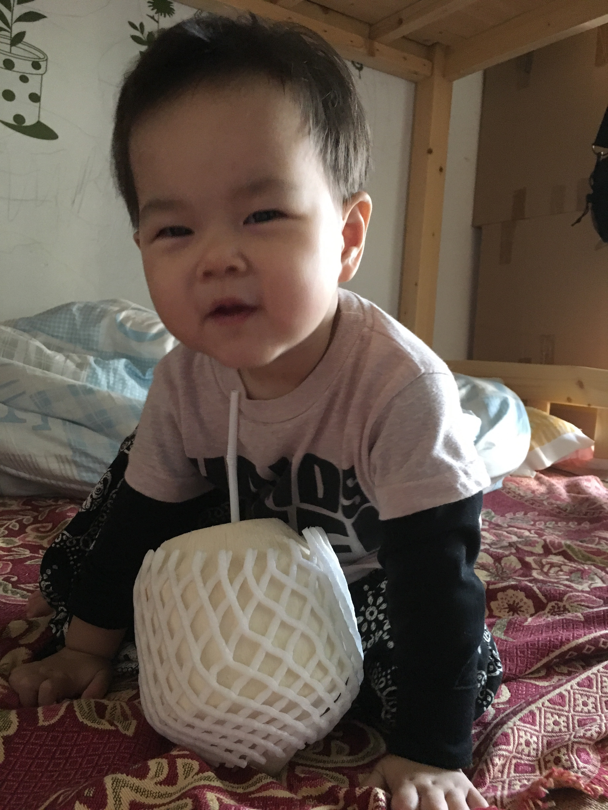

2016-01-06
第一次连续两天晚上自主入睡，妈妈说值得庆贺。虽说每次也需要喝得饱饱的，抱起放下好几次再折腾上一小会儿才能睡着，但妈妈说已经是很大的进步了。昨天开始减少了辅食量，晚上夜醒也从前一阵的5、6次变成了2次，看来晚上睡得不安稳跟前一阵辅食吃太多有很大关系呢。
2016-04-27
还在承受幼儿急疹带来的烦躁感，我的第一个生日在平淡中注定又有那么一些不平淡。没有蛋糕，没有抓周，没有大餐，这些都不是我想要的，这些不过是大人们的特别纪念，对我而言，只要妈妈在身边就好了。 奶奶说这几天我变得和妈妈更黏了，只想妈妈抱着，别人抱就哭。早早醒来，和爷爷奶奶逛公园，非要拉上妈妈一起，还不肯坐小车要妈妈一直抱着，其实我也知道妈妈辛苦，只是和妈妈一起，才能让我暂时忘掉身上疹子的不舒服。奶奶总说硬来，抱着我离妈妈远些，我就慢慢不哭了，可是我的心会很难过，不哭只是发现妈妈不在，哭也没用。奶奶总是强调妈妈在的时候我就不好带，比如喂饭的时候一见妈妈就不肯再吃，玩的时候一见妈妈就要爬过去，其实这只是因为我对安全感的缺乏，只有妈妈能给我在胎儿期相似的安全感，如果只是一味隔离我和妈妈，表面上暂时是好带了，长久看我会变得更没有安全感，胆小，烦躁，爱哭闹。希望奶奶明白，只有充分的和妈妈亲密接触，提升安全感，才能让我更快独立。也希望妈妈在这件事上更坚持一些。 下午爷爷奶奶午睡，和妈妈单独在一起，看看书，听听歌，跳跳舞，即使只是看妈妈做做小手工，撕撕小纸片，也是开心的。后来妈妈训练我自己用手吃饼干，我的急脾气一上来就大声嚷嚷，但妈妈还是坚持让我自己用手放嘴里，也一直鼓励我，终于我自己用手吃到了一口饼干，妈妈高兴的表扬了我，我也开心的笑了。 爸爸今天特意下班回来早些，想多陪我一会儿，也趁我睡觉前给我拍几张生日美照，可惜我还是一如既往不配合，其实早上给我拍照会更好，等到周末再补拍吧。 我的第一个生日，学会了自己吃饼干，学会了拍手。妈妈说人生的常态是平淡，所有的精彩都源于对平淡的充分接纳而后超越，希望这个平淡的生日成为我精彩一生的新起点。
2016-06-11
终于学会走路啦！第一次一个人稳稳地走了10步，终于学会了慢慢移动脚步，掌握平衡，不再像以前一个劲往前冲，走个两三步就摔。
2016-06-17
很久没叫妈妈，今天吃饭的时候妈妈去了厨房，想让妈妈抱，就脱口而出了“妈妈”，后来想喝奶又叫了几次，晚上睡前妈妈让我叫妈妈再喝奶，想到吃奶这么重要的事，赶紧又乖乖地叫了一声妈妈。
2016-06-23
连续35度+的广州，早上七点，阳光就开始灿烂了，一直到晚上六点还不肯退去。知了响成一片的大夏天里，看影子成了我的一大乐趣。早上一起床，抬头看见钻进窗帘缝里的阳光，我就开始喔喔叫了。走到客厅，发现靠窗的发财树投在白墙上的影子，又更兴奋的喔喔两声。出门玩，更是一看到影子就走不动道了，妈妈除了一次又一次告诉我“这是影子，妈妈的影子，妹妹的影子”之外，还会手舞足蹈一番，让我看见影子的千变万化，真开心呐。

2016-06-27
今天我14周，突然就走得特别溜了，从客厅地垫上很容易就走出来了，走到饭桌，走到五斗柜，走到电饭煲那里，还走到餐桌旁的食品箱那里翻了一袋未拆封的零食，拿着指房间的方向，要拿去房间吃。这下活动空间一下就大了。晚上吃饱nei’nei，我翻来翻去玩了一会儿，咿咿呀呀说了一会话，然后自己睡着了，刚好9:30。妈妈说这是14个月的惊喜。
2016-07-01
早上快递敲门我就醒了，于是一上午没睡，也不吃饭。下午1:30睡着，3点不到在梦中突然听到噗噗的声音，一下惊醒发现妈妈不在就哭了，在门外吃饭的妈妈赶紧进来抱我，我还在哭身子还有些发抖，还起了鸡皮疙瘩，妈妈赶紧安慰说“不怕妈妈就在门外，外面的声音是对面楼在喷灭蚊药，我们去阳台看看吧”，妈妈抱着我去阳台，看到对面好大的烟雾，还有噗噗的声音，我才终于不哭了。
2016-07-14
今天学会了叫nei nei，一想到nei nei就感觉很幸福。
2016-07-16
枕头上的Hello Kitty总是看不厌呐。是不是女孩子都爱这只猫呢？
2016-08-04
夏日炎炎真好眠。
2016-08-05
最近吃饭总喜欢站起来，一起来还发出得意的声音，嗷嗷或者哦哦叫一两声。妈妈会告诉我要坐下来才有饭饭吃，这在我想吃饭的时候还是很管用的，所以一旦我怎么都不肯坐下了，那也说明我已经吃饱了，那么是时候把我抱下餐椅了。最近几天走得很快了，也不容易摔倒了。

2016-08-07
总听爸爸妈妈叫我“妹妹”，今天自己叫自己“妹妹”了。
2016-08-11
有点小怕怕呢 没有摇摇车好玩嘛。
2016-08-12
学会了说“泡泡”，还有“8”。正在学习说“扣扣”。昨天进厨房的时候我一屁股坐到了地上，妈妈赶紧拉我起来说地上脏脏不可以随便坐，今天我记住了，看妈妈又在厨房做饭，我就搬了小板凳过去，但还不会放，也还不会坐上去，只是绕着凳子转圈圈，最后还是扶着凳子坐到了地上。
2016-08-17
学会帮妈妈做家务啦。
2016-08-23
如果不算刚出生在医院里那几天游的泳，这是我第二次游泳，一开始还是很害怕，从脚接触到水就开始哭，后来阿姨和妈妈给我很多玩具，我才慢慢适应了，就在水里飘着，很悠闲。游泳结束后的波波池才是我的最爱。



2016-11-16
这是我第一次喝椰汁，味道好极啦。

2016-11-17
妈妈给我吃蓝莓，我吃了一口有点酸，就吐了出来，看见完整的一颗蓝莓从我嘴里吐了出来，真好玩呐。我于是一发不可收拾，吃一颗吐一颗，从碗里拿起来，放进嘴里，吐到围兜里，再从围兜里一粒一粒捡起来放嘴里，吐到碗里，如此循环往复，乐此不疲。